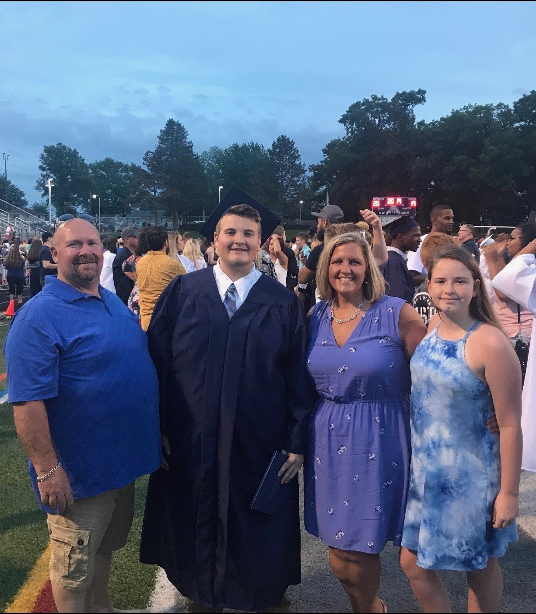

My Education
I graduated from Dallastown Area High School in 2019, My high school had tons of classes for different students. I focused on the tech related classes like robotics and electronics. But I found I also enjoyed woodworking. While doing robotics and electronics, I found out I like to write code. I also participated in duel enrollment at Stevens last year so I knew it was the college for me. Now I'm at Thaddues Stevens full time and my major is Computer Software Engineering Technology or CSET for short.
